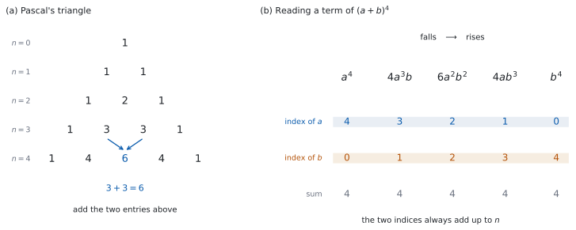

SL 1.9 — The binomial theorem（二項定理）
- Pascal’s triangle（パスカルの三角形）を作り、係数として使える。
- \(^{n}\mathrm{C}_{r} = \dfrac{n!}{r!(n-r)!}\) を、電卓なしで計算できる。
- 公式集の二項定理を使って、\((a+b)^{n}\) を展開できる。
- 展開せずに、特定の項の係数だけを取り出せる。
- \((2x-3)^{4}\) のように、\(a\) や \(b\) が単項式でないときも扱える。
- \(^{6}\mathrm{C}_{r} = 20\) のような問題を、値を並べて解ける。
The idea
1. 展開すると、何が起きるか
\((a+b)^{2}\) と \((a+b)^{3}\) を、手で展開してみます。
\[ (a+b)^{2} = a^{2} + 2ab + b^{2} \]
\[ (a+b)^{3} = a^{3} + 3a^{2}b + 3ab^{2} + b^{3} \]
\(3\) つのことが起きています。
- \(a\) の指数は \(n\) から \(0\) へ、\(1\) ずつ下がります。
- \(b\) の指数は \(0\) から \(n\) へ、\(1\) ずつ上がります。
- どの項でも、\(2\) つの指数の和は \(n\) です。
残るのは係数だけです。\(n = 2\) で \(1, 2, 1\)、\(n = 3\) で \(1, 3, 3, 1\) でした。この係数に、規則があります。
2. パスカルの三角形
係数だけを、\(n\) の小さいほうから並べます。
| \(n\) | 係数 |
|---|---|
| \(0\) | \(1\) |
| \(1\) | \(1 \quad 1\) |
| \(2\) | \(1 \quad 2 \quad 1\) |
| \(3\) | \(1 \quad 3 \quad 3 \quad 1\) |
| \(4\) | \(1 \quad 4 \quad 6 \quad 4 \quad 1\) |

作り方は \(1\) つだけです。
両端は \(1\)。それ以外は、すぐ上の \(2\) つを足す。
\(n = 4\) の行の \(6\) は、\(n = 3\) の行の \(3\) と \(3\) を足したものです。\(4\) は \(1 + 3\) です。
この先も、いくらでも作れます。 \(n = 5\) の行を作るには、\(n = 4\) の行から足していきます。
\(n \leq 5\) くらいまでなら、三角形を書くほうが \(^{n}\mathrm{C}_{r}\) を計算するより速いことが多いです。
\(n\) が大きいときや、\(1\) つの項だけがほしいときは、\(^{n}\mathrm{C}_{r}\) を使います（第 5 節）。
3. \(^{n}\mathrm{C}_{r}\) の式
三角形を書かずに、係数を直接出す式があります。
\[ ^{n}\mathrm{C}_{r} = \frac{n!}{r!\,(n-r)!} \tag{1}\]
公式集の 1.9 の欄に、二項定理といっしょに印刷されています。
\(^{n}\mathrm{C}_{r} = \dfrac{n!}{r!(n-r)!}\)
シラバスの Guidance 欄には、こう書かれています。
\(^{n}C_r\) should be found using both the formula and technology.
式で出せることも、電卓で出せることも、どちらも求められています。
\(n!\)（factorial、階乗）は、\(1\) から \(n\) までを掛けたものです。
\[ 5! = 5 \times 4 \times 3 \times 2 \times 1 = 120, \qquad 0! = 1 \]
\(^{5}\mathrm{C}_{2}\) を出してみます。
\[ ^{5}\mathrm{C}_{2} = \frac{5!}{2!\,3!} = \frac{120}{2 \times 6} = \frac{120}{12} = 10 \]
\(\dfrac{5!}{2!\,3!}\) は、\(120\) を出さなくても計算できます。\(5! = 5 \times 4 \times 3!\) なので、\(3!\) が消えます。
\[ \frac{5 \times 4 \times 3!}{2! \times 3!} = \frac{5 \times 4}{2} = 10 \]
\(n\) が大きいときは、この形でないと計算が急に重くなります。 \(^{10}\mathrm{C}_{3}\) なら \(\dfrac{10 \times 9 \times 8}{3 \times 2 \times 1} = 120\) です。上は \(r\) 個だけ、下は \(r!\) と覚えてください。
4. 二項定理
\[ (a+b)^{n} = a^{n} + {}^{n}\mathrm{C}_{1}\,a^{n-1}b + \cdots + {}^{n}\mathrm{C}_{r}\,a^{n-r}b^{r} + \cdots + b^{n} \tag{2}\]
公式集の 1.9 の欄に、次の形で印刷されています。
Binomial theorem \(n \in \mathbb{N}\)
\((a+b)^{n} = a^{n} + {}^{n}\mathrm{C}_{1} a^{n-1}b + \ldots + {}^{n}\mathrm{C}_{r} a^{n-r}b^{r} + \ldots + b^{n}\)
\(n \in \mathbb{N}\) は、\(n\) が \(0\) 以上の整数という意味です。分数や負の数の \(n\) は、SL では扱いません。
日本の学校では「自然数」に \(0\) を含めないのがふつうですが、IB の \(\mathbb{N}\) は \(0\) を含みます。 記号の約束が違うだけなので、IB の答案では IB の約束に合わせてください。
公式集では、はじめと終わりの項が \(a^{n}\)、\(b^{n}\) と、係数を書かずに印刷されています。これは
\[ ^{n}\mathrm{C}_{0} = \frac{n!}{0!\,n!} = 1, \qquad {}^{n}\mathrm{C}_{n} = \frac{n!}{n!\,0!} = 1 \]
だからです（\(0! = 1\) を使います）。\(^{n}\mathrm{C}_{0}\,a^{n}\) と書いても、同じことです。
第 1 節 で見た \(3\) つのことが、そのまま式になっています。
| 場所 | 中身 |
|---|---|
| 係数 | \(^{n}\mathrm{C}_{r}\) |
| \(a\) の指数 | \(n - r\)（下がる） |
| \(b\) の指数 | \(r\)（上がる） |
| 指数の和 | \((n-r) + r = n\)（いつも \(n\)） |
\(r\) は \(0\) から始まります。 \(r = 0\) の項が \(a^{n}\)、\(r = n\) の項が \(b^{n}\) です。
5. 特定の項だけを取り出す
\((x+1)^{20}\) の \(x^{18}\) の係数を聞かれたとき、全部展開する必要はありません。ほしい項だけを、表 2 から作ります。
手順は \(2\) 段階です。
- \(r\) を決める。 ほしい指数から、\(n - r\) か \(r\) のどちらかで方程式を立てます。
- その項だけを計算する。
\((x+3)^{5}\) の \(x^{2}\) の係数なら、\(a = x\)、\(b = 3\)、\(n = 5\) です。\(a\) の指数が \(2\) なので、
\[ n - r = 2 \ \Rightarrow \ 5 - r = 2 \ \Rightarrow \ r = 3 \]
その項は
\[ ^{5}\mathrm{C}_{3}\,x^{2}\,3^{3} = 10 \times 27 \times x^{2} = 270x^{2} \]
係数は \(270\) です。
冒頭の \((x+1)^{20}\) も同じです。\(20 - r = 18\) から \(r = 2\) で、係数は
\[ ^{20}\mathrm{C}_{2} = \frac{20 \times 19}{2 \times 1} = 190 \]
\(20\) 乗を展開する必要は、まったくありません。
the term in \(x^{2}\) と聞かれたら \(270x^{2}\)、the coefficient of \(x^{2}\) と聞かれたら \(270\) です。
\(x^{2}\) を付けるかどうかが違います。問題文を読み直してください。
6. \(a\) や \(b\) に係数や符号が付いているとき
\((2x-3)^{4}\) のような形でも、やることは同じです。\(a = 2x\)、\(b = -3\) と見ます。
\(2x\) も \(-3\) も、項が \(1\) つだけの式（monomial、単項式）です。\(x\) や \(3\) とちがうのは、係数と符号が付いていることだけです。
大事なのは、かっこです。
\[ ^{4}\mathrm{C}_{1}\,(2x)^{3}(-3)^{1} = 4 \times 8x^{3} \times (-3) = -96x^{3} \]
\((2x)^{3} = 8x^{3}\) です。\(2x^{3}\) ではありません（SL 1.5 第 4 節）。
\((2x-3)^{4}\) は \((2x + (-3))^{4}\) です。\(b = -3\) として、\(b\) の累乗の中にマイナスを入れます。
\[ (-3)^{1} = -3, \quad (-3)^{2} = 9, \quad (-3)^{3} = -27, \quad (-3)^{4} = 81 \]
\(a\) と \(b\) の符号が逆のときは、符号が \(1\) つおきに変わります。 \((2x-3)^{4}\) がその形です。
\(a\) も \(b\) も正なら、すべて \(+\) になります。
\(a\) も \(b\) も負なら、共通の \(-1\) をくくり出します。 \((-2x-3)^{4} = (2x+3)^{4}\) なので、すべて \(+\)。\((-2x-3)^{3} = -(2x+3)^{3}\) なので、すべて \(-\) です。\(n\) が偶数か奇数かで決まります。
まず \(a\) と \(b\) の符号を見てから、この見方を使ってください。
7. 値を並べて解く
シラバスに、次の例が挙がっています。
Example: Find \(r\) when \(^{6}C_r = 20\), using a table of values generated with technology.
やり方を、\(n = 4\) で見ておきます。\(^{4}\mathrm{C}_{r}\) を \(r = 0\) から順に並べると、
\[ 1, \quad 4, \quad 6, \quad 4, \quad 1 \]
表 1 の \(n = 4\) の行そのものです。たとえば \(^{4}\mathrm{C}_{r} = 6\) になるのは \(r = 2\) のときだけだと、並びを見るだけで分かります。
シラバスの例は \(n = 6\) ですが、やることは同じです（演習 \(8\) で扱います）。
この並びは、左右対称です。 \(^{4}\mathrm{C}_{1} = {}^{4}\mathrm{C}_{3} = 4\) です。一般に
\[ ^{n}\mathrm{C}_{r} = {}^{n}\mathrm{C}_{n-r} \tag{3}\]
ただし \(n\) と \(r\) は整数で、\(0 \leq r \leq n\) のときの話です。
計算を半分に減らせます。 \(^{9}\mathrm{C}_{7}\) を出すなら、\(^{9}\mathrm{C}_{2}\) を出すほうが楽です。
機種ごとの場所です。
| 機種 | 出し方 |
|---|---|
| TI-Nspire | menu → Probability → Combinations |
| Casio fx-CG50 | OPTN → PROB → nCr |
| TI-84 | MATH → PRB → nCr |
どの機種でも、\(^{6}\mathrm{C}_{3}\) は 6 nCr 3 の形で入力します。
表にするには、\(r\) の列に \(0, 1, 2, \ldots\) を入れ、隣の列で \(^{6}\mathrm{C}_{r}\) を計算させます。シラバスが言っている a table of values は、これです。
Paper 1 では使えません。 ですから、このページの例題と演習は、すべて手で出せる大きさにしてあります。
Why it works
なぜ係数が \(^{n}\mathrm{C}_{r}\) なのでしょうか。 展開を、かっこの数え上げとして見ると分かります。
\((a+b)^{3}\) は、かっこが \(3\) つあります。
\[ (a+b)(a+b)(a+b) \]
展開するとは、それぞれのかっこから \(a\) か \(b\) のどちらかを選んで掛け、すべての選び方を足すことです。
\(ab^{2}\) という項ができるのは、\(3\) つのうち \(2\) つのかっこから \(b\) を選んだときです。その選び方は
\[ b\,b\,a, \qquad b\,a\,b, \qquad a\,b\,b \]
の \(3\) 通りあります。だから \(ab^{2}\) の係数は \(3\) です。
一般に、\(n\) 個のかっこから \(b\) を取る \(r\) 個を選ぶ選び方の数が、そのまま係数になります。それが \(^{n}\mathrm{C}_{r}\) です。シラバスが Counting principles may be used in the development of the theorem と書いているのは、この見方のことです。
パスカルの三角形の作り方も、同じ見方で説明できます。 \(n\) 個から \(r\) 個を選ぶとき、最後の \(1\) 個を使うか使わないかで分けます。
- 使うなら、残り \(n-1\) 個から \(r-1\) 個を選ぶ。
- 使わないなら、残り \(n-1\) 個から \(r\) 個を選ぶ。
この \(2\) つを足したものが \(^{n}\mathrm{C}_{r}\) です。「すぐ上の \(2\) つを足す」は、これを言っています。
Worked examples
問題文は英語です。意味が理解できなかったら、問題文の下の「日本語訳」を開いてください。解説は日本語です。
例題も演習も、すべて電卓なしで解けます。 Paper 1 のつもりで解いてください。
例題 1 Expand \((x+2)^{4}\), giving your answer in ascending powers of \(x\).
日本語訳
\((x+2)^{4}\) を展開し、\(x\) の次数の低いほうから順に書きなさい。
\(n = 4\) の係数は \(1, 4, 6, 4, 1\) です（表 1）。\(a = x\)、\(b = 2\) です。
\(b\) の累乗を、先に出しておきます。\(2^{0} = 1\)、\(2^{1} = 2\)、\(2^{2} = 4\)、\(2^{3} = 8\)、\(2^{4} = 16\) です。
| \(r\) | 係数 | \(a^{4-r}\) | \(b^{r}\) | 項 |
|---|---|---|---|---|
| \(0\) | \(1\) | \(x^{4}\) | \(1\) | \(x^{4}\) |
| \(1\) | \(4\) | \(x^{3}\) | \(2\) | \(8x^{3}\) |
| \(2\) | \(6\) | \(x^{2}\) | \(4\) | \(24x^{2}\) |
| \(3\) | \(4\) | \(x\) | \(8\) | \(32x\) |
| \(4\) | \(1\) | \(1\) | \(16\) | \(16\) |
ascending powers なので、次数の低いほうから並べます。
\[ (x+2)^{4} = 16 + 32x + 24x^{2} + 8x^{3} + x^{4} \]
検算。 \(x = 1\) を、もとの式と答えの式の両方に入れます。
もとの式は \((1+2)^{4} = 3^{4} = 81\) です。答えの式は
\[ 16 + 32 + 24 + 8 + 1 = 81 \]
合いました ✓ 独立なのは、左側だけです。 \((1+2)^{4} = 81\) は、二項定理をまったく使わずに出しています。右側は係数の合計なので、係数の値のまちがいは見つかりますが、並べる順序のまちがいは見つかりません。
順序は、\(x = 0\) で見ます。 もとの式は \((0+2)^{4} = 16\) で、答えの式で \(x\) を含まない項も \(16\) です ✓ もし降べきの順に書いていたら、先頭が \(x^{4}\) になり、ascending の指示に合いません。
\(x = -1\) でも見ます。 もとの式は \((-1+2)^{4} = 1\) です。答えの式は \(16 - 32 + 24 - 8 + 1 = 1\) ✓
\((x+2)^{4}\) を \(x^{4} + 2^{4}\) としていたら、\(x = 1\) で \(1 + 16 = 17\) となり、\(81\) とはまるでちがいます。累乗は、かっこの中の和には配れません。
\[(x+2)^{4} = 16 + 32x + 24x^{2} + 8x^{3} + x^{4}\]
例題 2 (a) Use the formula \(^{n}\mathrm{C}_{r} = \dfrac{n!}{r!(n-r)!}\) to find the value of \(^{7}\mathrm{C}_{3}\).
(b) Find the value of \(^{7}\mathrm{C}_{4}\).
(c) Explain why \(^{n}\mathrm{C}_{r} = {}^{n}\mathrm{C}_{n-r}\) for integers \(n\) and \(r\) with \(0 \leq r \leq n\).
日本語訳
(a) 公式 \(^{n}\mathrm{C}_{r} = \dfrac{n!}{r!(n-r)!}\) を使って、\(^{7}\mathrm{C}_{3}\) の値を求めなさい。
(b) \(^{7}\mathrm{C}_{4}\) の値を求めなさい。
(c) \(0 \leq r \leq n\) をみたす整数 \(n\)、\(r\) について \(^{n}\mathrm{C}_{r} = {}^{n}\mathrm{C}_{n-r}\) となる理由を説明しなさい。
(a) 式 1 に \(n = 7\)、\(r = 3\) を入れます。
\[ ^{7}\mathrm{C}_{3} = \frac{7!}{3!\,4!} = \frac{7 \times 6 \times 5}{3 \times 2 \times 1} = \frac{210}{6} = 35 \]
\(7! = 7 \times 6 \times 5 \times 4!\) なので、\(4!\) が約分で消えます（第 3 節）。
(b) 式 3 を使えば、計算せずに出ます。\(7 - 4 = 3\) なので、
\[ ^{7}\mathrm{C}_{4} = {}^{7}\mathrm{C}_{3} = 35 \]
(c) Explain why なので、英語で理由を書きます。
試験ではこう書く
By the formula, \(^{n}\mathrm{C}_{n-r} = \dfrac{n!}{(n-r)!\,\bigl(n-(n-r)\bigr)!} = \dfrac{n!}{(n-r)!\,r!}\), which is the same expression as \(^{n}\mathrm{C}_{r} = \dfrac{n!}{r!\,(n-r)!}\), since \(r!\,(n-r)! = (n-r)!\,r!\). There is also a counting reason: choosing which \(r\) of the \(n\) objects to take is the same as choosing which \(n-r\) objects to leave, so the two counts must be equal.
（公式によれば \(^{n}\mathrm{C}_{n-r} = \dfrac{n!}{(n-r)!\,r!}\) となり、\(^{n}\mathrm{C}_{r}\) と同じ式である。掛ける順序を変えただけだからである。数え方でも説明できる。\(n\) 個のうち取る \(r\) 個を選ぶことと、残す \(n-r\) 個を選ぶことは同じなので、通りの数は等しい、という意味です。）
検算（(a) について）。 式 3 より \(^{7}\mathrm{C}_{3} = {}^{7}\mathrm{C}_{4}\) なので、\(r = 4\) のほうを公式で出してみます。
\[ ^{7}\mathrm{C}_{4} = \frac{7!}{4!\,3!} = \frac{7 \times 6 \times 5 \times 4}{4 \times 3 \times 2 \times 1} = \frac{840}{24} = 35 \]
割る数も掛ける数も (a) とは違いますが、同じ \(35\) になりました ✓ (a) の \(\dfrac{210}{6}\) を計算し直したのではないところが大事です。
\(7 \times 6 \times 5 = 210\) で止めていたら、\(3!\) で割り忘れています。\(^{n}\mathrm{C}_{r}\) は「並べ方」ではなく「選び方」なので、同じ組を数え直した分を \(r!\) で割る必要があります。
(a) \[^{7}\mathrm{C}_{3} = \frac{7!}{3!\,4!} = \frac{7 \times 6 \times 5}{3 \times 2 \times 1} = 35\]
(b) \[^{7}\mathrm{C}_{4} = {}^{7}\mathrm{C}_{3} = 35\]
(c) Replacing \(r\) by \(n-r\) in the formula gives \(^{n}\mathrm{C}_{n-r} = \dfrac{n!}{(n-r)!\,\bigl(n-(n-r)\bigr)!} = \dfrac{n!}{(n-r)!\,r!} = {}^{n}\mathrm{C}_{r}\). Choosing which \(r\) objects to take is the same as choosing which \(n-r\) objects to leave.
例題 3 Expand \((2x-3)^{3}\).
日本語訳
\((2x-3)^{3}\) を展開しなさい。
\(a = 2x\)、\(b = -3\)、\(n = 3\) です（第 6 節）。係数は \(1, 3, 3, 1\) です。
\[ (2x)^{3} = 8x^{3}, \qquad (2x)^{2} = 4x^{2}, \qquad (2x)^{1} = 2x \]
\[ (-3)^{1} = -3, \qquad (-3)^{2} = 9, \qquad (-3)^{3} = -27 \]
\(1\) 項ずつ作ります。
\[ 1 \times 8x^{3} = 8x^{3} \]
\[ 3 \times 4x^{2} \times (-3) = -36x^{2} \]
\[ 3 \times 2x \times 9 = 54x \]
\[ 1 \times (-27) = -27 \]
\[ (2x-3)^{3} = 8x^{3} - 36x^{2} + 54x - 27 \]
検算。 \(x = 1\) を、もとの式と答えの式に入れます。
もとの式は \((2-3)^{3} = (-1)^{3} = -1\) です。答えの式は
\[ 8 - 36 + 54 - 27 = -1 \]
合いました ✓
\(x = 0\) でも見ます。 定数項は \(b^{n}\) そのものなので、値が合っているかの確認にはなりません。 確認できるのは、定数項が正しい位置にあるかです。もとの式は \((-3)^{3} = -27\)、答えの式で \(x\) を含まない項も \(-27\) ✓
符号の並びも見ます。 \(a = 2x\) が正、\(b = -3\) が負なので、\(+, -, +, -\) と交互になるはずです（第 6 節）。同じ符号が続いていたら、そこを疑ってください。
\((2x)^{2}\) を \(2x^{2}\) としていたら、\(x^{2}\) の項は \(-18x^{2}\) です。\(x = 1\) で \(8 - 18 + 54 - 27 = 17\) となり、\(-1\) と合いません。
\[(2x-3)^{3} = (2x)^{3} + 3(2x)^{2}(-3) + 3(2x)(-3)^{2} + (-3)^{3}\]
\[= 8x^{3} - 36x^{2} + 54x - 27\]
例題 4 (a) Find the coefficient of \(x^{3}\) in the expansion of \((x+3)^{6}\).
(b) Find the coefficient of \(x^{2}\) in the expansion of \((2x-1)^{5}\).
(c) Explain why your answer to part (b) is negative.
日本語訳
(a) \((x+3)^{6}\) を展開したときの \(x^{3}\) の係数を求めなさい。
(b) \((2x-1)^{5}\) を展開したときの \(x^{2}\) の係数を求めなさい。
(c) (b) の答えが負である理由を説明しなさい。
(a) \(a = x\)、\(b = 3\)、\(n = 6\) です。\(a\) の指数がほしい \(3\) なので（第 5 節）、
\[ 6 - r = 3 \ \Rightarrow \ r = 3 \]
その項は
\[ ^{6}\mathrm{C}_{3} = \frac{6 \times 5 \times 4}{3 \times 2 \times 1} = 20 \]
\[ ^{6}\mathrm{C}_{3}\,x^{3}\,3^{3} = 20 \times 27 \times x^{3} = 540x^{3} \]
係数は \(540\) です。
(b) \(a = 2x\)、\(b = -1\)、\(n = 5\) です。\(x^{2}\) がほしいので、
\[ 5 - r = 2 \ \Rightarrow \ r = 3 \]
その項は
\[ ^{5}\mathrm{C}_{3}\,(2x)^{2}(-1)^{3} = 10 \times 4x^{2} \times (-1) = -40x^{2} \]
係数は \(-40\) です。
(c) Explain why なので、英語で理由を書きます。
試験ではこう書く
The term in \(x^{2}\) comes from \(r = 3\), so it contains the factor \((-1)^{3}\). Since \(3\) is odd, \((-1)^{3} = -1\), while the other factors of the coefficient, \(^{5}\mathrm{C}_{3} = 10\) and \(2^{2} = 4\), are both positive. The coefficient is therefore \(10 \times 4 \times (-1) = -40\), which is negative. In general the terms of \((2x-1)^{5}\) alternate in sign, and the ones with an odd value of \(r\) are the negative ones.
（\(x^2\) の項は \(r = 3\) から出るので、因数 \((-1)^3\) を含む。\(3\) は奇数なので \((-1)^3 = -1\) であり、ほかの因数 \(^{5}\mathrm{C}_{3} = 10\) と \((2x)^2 = 4x^2\) はどちらも正である。したがって積は負になり、\(-40x^2\) となる。一般に \((2x-1)^5\) の項は符号が交互で、\(r\) が奇数のものが負になる、という意味です。）
検算（(a) について）。 \(^{6}\mathrm{C}_{3}\) を、パスカルの作り方でも出します。\(^{5}\mathrm{C}_{2} = 10\) で（第 3 節）、式 3 より \(^{5}\mathrm{C}_{3} = {}^{5}\mathrm{C}_{2} = 10\) なので、
\[ ^{6}\mathrm{C}_{3} = {}^{5}\mathrm{C}_{2} + {}^{5}\mathrm{C}_{3} = 10 + 10 = 20 \]
割り算をまったく使わずに、同じ \(20\) になりました ✓
検算（(b) について）。 \(x = 1\) で全体を見ます。もとの式は \((2-1)^{5} = 1\) です。全部展開すると
\[ 32x^{5} - 80x^{4} + 80x^{3} - 40x^{2} + 10x - 1 \]
で、\(32 - 80 + 80 - 40 + 10 - 1 = 1\) ✓ \(x^{2}\) の係数は \(-40\) で、合っています。
指数の和 \(3 + 3 = 6\) は、検算にはなりません。 一般項が \(a^{n-r}b^{r}\) の形をしている以上、和はいつも \(n\) になるからです。
効くのは、どちらが \(a\) の指数かの確認です。 (a) では \(r = 3\) を \(b\) の指数と取りちがえても、\(a\) の指数も \(3\) なのでたまたま同じ答えになります。(b) ではそうなりません。\(r = 3\) のとき \(a\) の指数は \(2\) です。\(2\) つが違う問題で確かめるのが要です。
(a) \(6 - r = 3\), so \(r = 3\) \[^{6}\mathrm{C}_{3} = \frac{6 \times 5 \times 4}{3 \times 2 \times 1} = 20\] \[^{6}\mathrm{C}_{3}\,x^{3}\,3^{3} = 20 \times 27 x^{3} = 540x^{3}\] The coefficient is \(540\).
(b) \(5 - r = 2\), so \(r = 3\) \[^{5}\mathrm{C}_{3}\,(2x)^{2}(-1)^{3} = 10 \times 4x^{2} \times (-1) = -40x^{2}\] The coefficient is \(-40\).
(c) The term has the factor \((-1)^{3} = -1\), while \(^{5}\mathrm{C}_{3} = 10\) and \(2^{2} = 4\) are positive, so the coefficient is negative.
Common errors
累乗は、かっこの中の和には配れません（SL 1.5 第 2 節）。配れるのは、積と商のときだけです。
\(x = 1\) を入れれば、すぐ分かります。\((1+2)^{4} = 81\) で、\(1 + 16 = 17\) ではありません。
かっこの中の全部が \(3\) 乗されます。\((2x)^{3} = 8x^{3}\) です（第 6 節）。
\(a\) が単項式でないときは、必ずかっこを書いてから累乗してください。
\((2x-3)^{4}\) では \(b = -3\) です。\(b = 3\) として計算すると、符号がすべて \(+\) になります。
\(a\) が正で \(b\) が負のときは、展開の結果で \(+\) と \(-\) が交互に並びます。並んでいなければ、マイナスを落としています。
\(a\) も \(b\) も正のときは、すべて \(+\) です。 交互でないからといって、まちがいとはかぎりません。
一般項は \(^{n}\mathrm{C}_{r}\,a^{n-r}b^{r}\) です。\(r\) は \(b\) の指数で、\(a\) の指数は \(n - r\) です（表 2）。
\(x^{k}\) の係数がほしいとき、\(a = x\) なら \(n - r = k\) です。\(r = k\) ではありません。
\(2\) つの指数を足して \(n\) になるかを、必ず確かめてください。
ascending powers を、降べきの順で答える
ascending powers of \(x\) は、定数項から書き始めて、次数を上げていくという意味です。\((x+2)^{4}\) なら \(16 + 32x + 24x^{2} + 8x^{3} + x^{4}\) で、\(x^{4} + 8x^{3} + \cdots\) ではありません。
\(x = 1\) を入れる検算では見つかりません。 順序を逆にしても、係数の合計は変わらないからです。
\(x = 0\) を入れて、定数項が正しい位置にあるかを見てください。
the term in \(x^{2}\) は \(270x^{2}\)、the coefficient of \(x^{2}\) は \(270\) です（第 5 節）。
問題文の英語で決まります。 迷ったら、両方書くのではなく、聞かれたほうだけを書いてください。
符号も係数の一部です。 \(-40x^{2}\) の係数は \(-40\) であって、\(40\) ではありません。
Exercises
各問題に、折りたたみが \(3\) つ付いています。日本語訳、解答例（答案用紙に書くべきこと。英語です）、解説（なぜそうなるか。日本語です）。
まず自分で解いて、次に解答例と見くらべてください。解説は、合わなかったときだけ開けば十分です。
1 (a) Write down the numbers in the row of Pascal’s triangle for \(n = 5\).
(b) Hence expand \((x+1)^{5}\).
日本語訳
(a) パスカルの三角形の \(n = 5\) の行の数を書きなさい。
(b) それを使って \((x+1)^{5}\) を展開しなさい。
(a) \(1, \ 5, \ 10, \ 10, \ 5, \ 1\)
(b) \[(x+1)^{5} = x^{5} + 5x^{4} + 10x^{3} + 10x^{2} + 5x + 1\]
(a) \(n = 4\) の行 \(1, 4, 6, 4, 1\) から作ります（表 1）。両端は \(1\)、それ以外はすぐ上の \(2\) つを足します。\(1+4 = 5\)、\(4+6 = 10\)、\(6+4 = 10\)、\(4+1 = 5\) です。
(b) \(b = 1\) なので、\(b\) の累乗はすべて \(1\) です。係数がそのまま項の係数になります。
検算。 \(x = 1\) を入れます。もとの式は \(2^{5} = 32\) です。答えの式は \(1+5+10+10+5+1 = 32\) ✓
行の合計が \(2^{n}\) になるのは、偶然ではありません（演習 \(9\) で扱います）。
\(1, 5, 10, 5, 1\) と \(1\) つ足りなければ、行の数が \(n+1\) 個になっていません。\(n = 5\) の行には、数が \(6\) 個あります。
2 Find the value of each of the following.
(a) \(^{8}\mathrm{C}_{2}\)
(b) \(^{8}\mathrm{C}_{6}\)
日本語訳
次の値を求めなさい。
(a) \(^{8}\mathrm{C}_{2}\)
(b) \(^{8}\mathrm{C}_{6}\)
(a) \[^{8}\mathrm{C}_{2} = \frac{8!}{2!\,6!} = \frac{8 \times 7}{2 \times 1} = 28\]
(b) \[^{8}\mathrm{C}_{6} = {}^{8}\mathrm{C}_{2} = 28\]
(a) \(8! = 8 \times 7 \times 6!\) なので、\(6!\) が約分で消えます（第 3 節）。
(b) \(8 - 6 = 2\) なので、式 3 がそのまま使えます。計算し直す必要はありません。
検算。 数え方で出します。\(^{8}\mathrm{C}_{2}\) は、\(8\) 個から \(2\) 個を選ぶ選び方の数です。小さいほうの番号で分けて数えます。\(1\) 番と組む相手は \(7\) 通り、\(2\) 番と組む相手は（\(1\) 番を除いて）\(6\) 通り、… と続けて
\[ 7 + 6 + 5 + 4 + 3 + 2 + 1 = 28 \]
割り算を一度も使わずに \(28\) になりました ✓
(b) の \(\dfrac{8!}{6!\,2!}\) を計算し直しても、検算にはなりません。 約分すると (a) とまったく同じ \(\dfrac{8 \times 7}{2}\) になるからです。同じ計算を書き直すのは、検算ではありません。
\(8 \times 7 = 56\) で止めていたら、\(2!\) で割り忘れています。\(^{n}\mathrm{C}_{r}\) は「並べ方」ではなく「選び方」なので、同じ組を数え直した分を \(r!\) で割る必要があります。
3 Expand \((x-2)^{4}\).
日本語訳
\((x-2)^{4}\) を展開しなさい。
\[(x-2)^{4} = x^{4} + 4x^{3}(-2) + 6x^{2}(-2)^{2} + 4x(-2)^{3} + (-2)^{4}\]
\[= x^{4} - 8x^{3} + 24x^{2} - 32x + 16\]
\(b = -2\) です（第 6 節）。\((-2)^{1} = -2\)、\((-2)^{2} = 4\)、\((-2)^{3} = -8\)、\((-2)^{4} = 16\) です。
検算。 \(x = 1\) を入れます。もとの式は \((1-2)^{4} = (-1)^{4} = 1\) です。答えの式は
\[ 1 - 8 + 24 - 32 + 16 = 1 \]
合いました ✓
\(x = 0\) でも見ます。 定数項は \(b^{4}\) そのものなので、値の確認にはなりません。 確認できるのは位置です。もとの式は \((-2)^{4} = 16\)、答えの式で \(x\) を含まない項も \(16\) ✓
符号の並びも見ます。 \(a = x\) が正、\(b = -2\) が負なので、\(+, -, +, -, +\) と交互になるはずです ✓
\(b = 2\) としていたら、すべて \(+\) になります。\(x = 1\) で \(1 + 8 + 24 + 32 + 16 = 81\) となり、\(1\) と合いません。
4 Expand \((3x+1)^{3}\).
日本語訳
\((3x+1)^{3}\) を展開しなさい。
\[(3x+1)^{3} = (3x)^{3} + 3(3x)^{2} + 3(3x) + 1\]
\[= 27x^{3} + 27x^{2} + 9x + 1\]
\(a = 3x\)、\(b = 1\) です。\(b\) の累乗はすべて \(1\) なので、書かなくてすみます。
\((3x)^{3} = 27x^{3}\)、\((3x)^{2} = 9x^{2}\) です。かっこを忘れないでください（第 6 節）。
検算。 \(x = 1\) を入れます。もとの式は \(4^{3} = 64\) です。答えの式は \(27 + 27 + 9 + 1 = 64\) ✓
\(x^{3}\) と \(x^{2}\) の係数が、どちらも \(27\) になります。 \(1 \times 3^{3}\) と \(3 \times 3^{2}\) が、たまたま同じ値になっただけです。「同じ数が並んだから計算ミスだ」とは思わないでください。
\((3x)^{2}\) を \(3x^{2}\) としていたら、\(x^{2}\) の項は \(9x^{2}\) です。\(x = 1\) で \(27 + 9 + 9 + 1 = 46\) となり、\(64\) と合いません。
5 Expand \((1+2x)^{5}\), giving your answer in ascending powers of \(x\).
日本語訳
\((1+2x)^{5}\) を展開し、\(x\) の次数の低いほうから順に書きなさい。
\[(1+2x)^{5} = 1 + 5(2x) + 10(2x)^{2} + 10(2x)^{3} + 5(2x)^{4} + (2x)^{5}\]
\[= 1 + 10x + 40x^{2} + 80x^{3} + 80x^{4} + 32x^{5}\]
\(a = 1\)、\(b = 2x\) です。今度は \(b\) のほうが文字ですが、やることは同じです。係数は演習 \(1\) で作った \(1, 5, 10, 10, 5, 1\) です。
\(a\) の累乗がすべて \(1\) なので、\(b\) の累乗だけを計算します。\((2x)^{2} = 4x^{2}\)、\((2x)^{3} = 8x^{3}\)、\((2x)^{4} = 16x^{4}\)、\((2x)^{5} = 32x^{5}\) です。
\(r\) が \(b\) の指数なので、この形では次数の低いほうから自然に並びます。
検算。 \(x = 1\) を入れます。もとの式は \(3^{5} = 243\) です。答えの式は
\[ 1 + 10 + 40 + 80 + 80 + 32 = 243 \]
合いました ✓
\(x = -\dfrac{1}{2}\) でも見ます。 もとの式は \((1-1)^{5} = 0\) です。答えの式は
\[ 1 - 5 + 10 - 10 + 5 - 1 = 0 \]
合いました ✓ \(0\) になる値を選ぶと、符号の落としがあれば \(0\) にならないので、すぐ気づけます。（\(2\) 点で合っても証明ではありませんが、実用上は十分です。）
6 Find the coefficient of \(x^{4}\) in the expansion of \((x+2)^{7}\).
日本語訳
\((x+2)^{7}\) を展開したときの \(x^{4}\) の係数を求めなさい。
\(7 - r = 4\), so \(r = 3\)
\[^{7}\mathrm{C}_{3}\,x^{4}\,2^{3} = 35 \times 8 \times x^{4} = 280x^{4}\]
The coefficient is \(280\).
展開せずに、ほしい項だけを作ります（第 5 節）。
\(a = x\) なので、\(a\) の指数がほしい \(4\) です。\(7 - r = 4\) から \(r = 3\) です。
指数の和 \(4 + 3 = 7\) は、検算にはなりません。 一般項が \(a^{n-r}b^{r}\) の形をしている以上、和はいつも \(n\) だからです（表 2）。効くのは、どちらが \(a\) の指数かの確認です。
検算。 \(^{7}\mathrm{C}_{3}\) を、\(r\) を \(1\) ずつ増やす道すじで出します。\(^{7}\mathrm{C}_{1} = 7\) から始めて、
\[ ^{7}\mathrm{C}_{2} = 7 \times \frac{6}{2} = 21, \qquad {}^{7}\mathrm{C}_{3} = 21 \times \frac{5}{3} = 35 \]
同じ \(35\) です ✓ 階乗を書かない別の道すじです。
\(r = 4\) としていたら、項は \(^{7}\mathrm{C}_{4}x^{3}2^{4} = 35 \times 16 x^{3} = 560x^{3}\) です。\(x^{3}\) の項であって、\(x^{4}\) ではありません。指数の和は \(7\) で合ってしまうので、どちらが \(a\) の指数かを必ず確かめてください。
7 Find the term in \(x^{2}\) in the expansion of \((2x-1)^{4}\).
日本語訳
\((2x-1)^{4}\) を展開したときの \(x^{2}\) の項を求めなさい。
\(4 - r = 2\), so \(r = 2\)
\[^{4}\mathrm{C}_{2}\,(2x)^{2}(-1)^{2} = 6 \times 4x^{2} \times 1 = 24x^{2}\]
the term in \(x^{2}\) なので、\(x^{2}\) を付けて答えます（第 5 節）。\(24\) だけでは、聞かれたものと違います。
\(a = 2x\) なので、\((2x)^{2} = 4x^{2}\) です。かっこを忘れないでください。
\((-1)^{2} = 1\) なので、この項は正です。
検算。 \((2x-1)^{4}\) を全部展開します。係数は \(1, 4, 6, 4, 1\) で、
\[ 16x^{4} - 32x^{3} + 24x^{2} - 8x + 1 \]
\(x^{2}\) の項だけを見くらべても、検算にはなりません。 同じ \(6 \times (2x)^{2} \times (-1)^{2}\) をもう一度書くだけだからです。
効くのは \(x = 1\) の代入です。 もとの式は \((2-1)^{4} = 1\)、展開した式は \(16 - 32 + 24 - 8 + 1 = 1\) ✓
\((2x)^{2}\) を \(2x^{2}\) としていたら、\(x^{2}\) の項は \(12x^{2}\) になります。\(x = 1\) で \(16 - 32 + 12 - 8 + 1 = -11\) となり、\(1\) と合いません。そこで気づけます。
8 (a) Write down the values of \(^{6}\mathrm{C}_{r}\) for \(r = 0, 1, 2, 3, 4, 5, 6\).
(b) Hence find the value of \(r\) for which \(^{6}\mathrm{C}_{r} = 20\).
日本語訳
(a) \(r = 0, 1, 2, 3, 4, 5, 6\) について \(^{6}\mathrm{C}_{r}\) の値を書きなさい。
(b) それを使って、\(^{6}\mathrm{C}_{r} = 20\) となる \(r\) の値を求めなさい。
(a) \(1, \ 6, \ 15, \ 20, \ 15, \ 6, \ 1\)
(b) \(r = 3\)
(a) パスカルの三角形の \(n = 6\) の行です。\(n = 5\) の行から作れます。
(b) 並びの中に \(20\) は \(1\) つだけなので、\(r = 3\) に決まります。
検算。 \(^{6}\mathrm{C}_{3}\) を、公式でも出します。
\[ \frac{6 \times 5 \times 4}{3 \times 2 \times 1} = \frac{120}{6} = 20 \]
合いました ✓
左右対称なのは正しい形ですが、これだけでは検算になりません。 まん中の数がずれていても、対称のままだからです（式 3）。
効くのは、行の合計です。 \(1+6+15+20+15+6+1 = 64 = 2^{6}\) ✓（演習 \(9\)）公式と行の合計、\(2\) つの独立な見方で確かめられました。
9 Explain why the numbers in the row of Pascal’s triangle that gives the coefficients of \((a+b)^{n}\) add up to \(2^{n}\).
日本語訳
\((a+b)^{n}\) の係数を与える、パスカルの三角形の行について、その数の合計が \(2^{n}\) になる理由を説明しなさい。
Substituting \(a = 1\) and \(b = 1\) into the binomial theorem gives \[(1+1)^{n} = {}^{n}\mathrm{C}_{0} + {}^{n}\mathrm{C}_{1} + \cdots + {}^{n}\mathrm{C}_{n}\] Every power of \(1\) is \(1\), so the right-hand side is exactly the sum of the row, and the left-hand side is \(2^{n}\).
Explain why なので、どこに何を代入したかをはっきり書きます。
\(a = 1\)、\(b = 1\) を 式 2 に入れると、\(a^{n-r}b^{r} = 1\) となって係数だけが残ります。
検算。 小さい \(n\) で確かめます。
\(n = 3\) なら \(1+3+3+1 = 8 = 2^{3}\) ✓ \(n = 4\) なら \(1+4+6+4+1 = 16 = 2^{4}\) ✓
数え方でも説明できます。 \(n\) 個のかっこから、それぞれ \(a\) か \(b\) を選ぶ選び方は全部で \(2^{n}\) 通りです（Why it works）。それを「\(b\) を何個選んだか」で分けて数えたのが、この行の数です。同じものを \(2\) 通りに数えているので、合計が一致します。
試験ではこう書く
The binomial theorem states that \((a+b)^{n} = {}^{n}\mathrm{C}_{0}a^{n} + {}^{n}\mathrm{C}_{1}a^{n-1}b + \cdots + {}^{n}\mathrm{C}_{n}b^{n}\), and the numbers in the row of Pascal’s triangle are exactly the coefficients \(^{n}\mathrm{C}_{0}, {}^{n}\mathrm{C}_{1}, \ldots, {}^{n}\mathrm{C}_{n}\). Substituting \(a = 1\) and \(b = 1\) makes every factor \(a^{n-r}b^{r}\) equal to \(1\), so the right-hand side becomes the sum of the row, while the left-hand side becomes \((1+1)^{n} = 2^{n}\). Hence the row sums to \(2^{n}\). For example, the row for \(n = 4\) is \(1, 4, 6, 4, 1\), and \(1+4+6+4+1 = 16 = 2^{4}\).
10 A student expands \((x-3)^{4}\) and writes the following.
\[ x^{4} + 12x^{3} + 54x^{2} + 108x + 81 \]
Identify the error in the student’s work, and write down the correct expansion.
日本語訳
ある生徒が \((x-3)^{4}\) を展開するように言われ、上のように書きました。
生徒の誤りを指摘し、正しい展開を書きなさい。
The student used \(b = 3\) instead of \(b = -3\), so all the signs are positive.
\[(x-3)^{4} = x^{4} - 12x^{3} + 54x^{2} - 108x + 81\]
Identify the error なので、どこが違うのかを名指ししてから、正しい答えを書きます。
\(b = -3\) です（第 6 節）。\((-3)^{1} = -3\)、\((-3)^{2} = 9\)、\((-3)^{3} = -27\)、\((-3)^{4} = 81\) なので、符号が交互になります。
係数の大きさは、生徒のものと同じです。変わるのは符号だけです。
検算。 \(x = 1\) を入れます。もとの式は \((1-3)^{4} = (-2)^{4} = 16\) です。
正しい展開は \(1 - 12 + 54 - 108 + 81 = 16\) ✓
生徒の答えは \(1 + 12 + 54 + 108 + 81 = 256\) で、\(16\) とはまるでちがいます ✓ \(x = 1\) を入れるだけで、符号の落としが見つかります。
試験ではこう書く
The student treated the second term as \(b = 3\) rather than \(b = -3\), so every term came out positive. With \(b = -3\) the odd powers of \(b\) are negative, so the signs alternate. The correct expansion is \((x-3)^{4} = x^{4} - 12x^{3} + 54x^{2} - 108x + 81\). Substituting \(x = 1\) confirms this: the original expression gives \((-2)^{4} = 16\), the correct expansion gives \(1 - 12 + 54 - 108 + 81 = 16\), and the student’s answer gives \(256\).